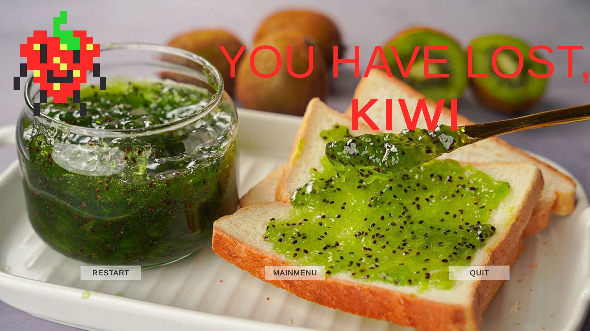
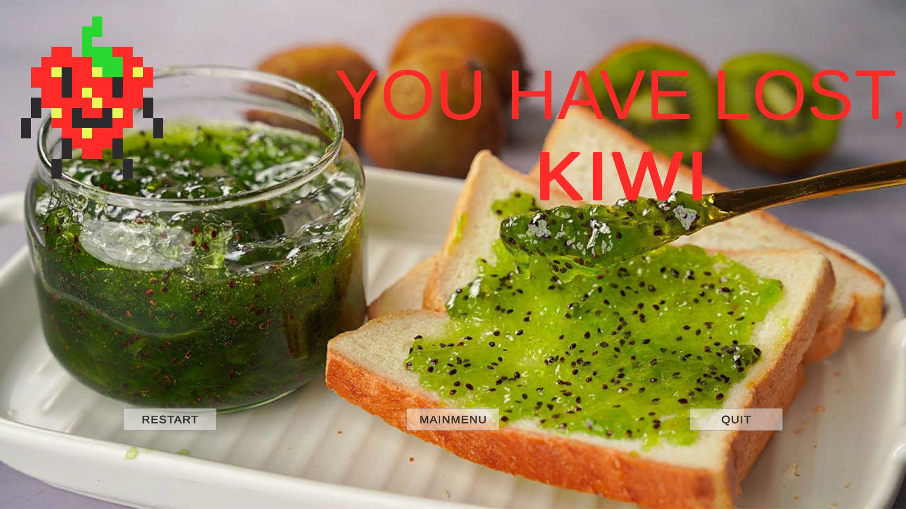
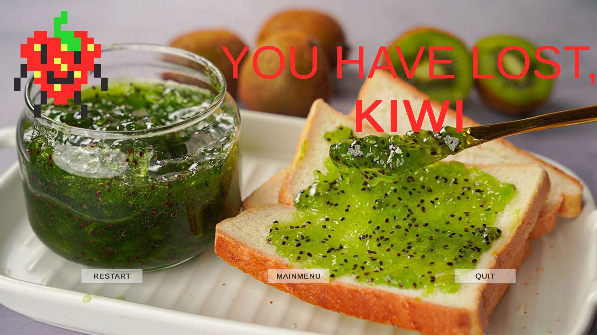

Voedelstjes is een kleine game die ik heb gemaakt voor een gamejam. Waarmee ik in totaal 36 uur mee bezig ben geweest, in een tijd van een week.
Je speelt als een aardbei of kiwi en verzamelt voorwerpen om het ander stuk fruit in jam te veranderen.
Je zoekt 5 voorwerpen om te winnen terwijl je bestek aan het vermijden bent, anders ga je dood.
Als je niet snel genoeg bent, dan maakt de andere stuk fruit jou naar jam, je moet snel jammen.
Wat ik technisch nieuw heb geleerd, zijn Json files. Dit heb ik gebruikt om de player keuze op te slaan.
Dit kan ik later toepassen op andere projecten.
Ik focusete mij op het snel maken van een speelbare game.
Heb ook voor het eerst sound effects toegevoegd aan een game. Als laatste, heb ik ook zelf pixel art gemaakt.
Klik hier om naar de playable game te gaan!
